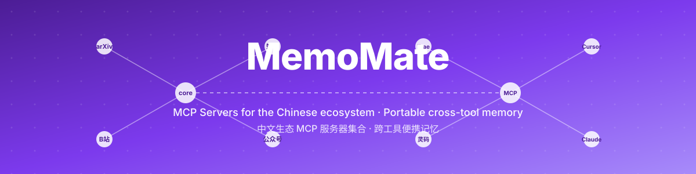

小而专注的 MCP 服务器(arXiv · B 站 · 知乎 · 公众号),配一个 SQLite + FTS5 的便携、可导出、跨工具共享的记忆库。 任何 MCP 兼容的 AI IDE 都用同样的方式接入。

端到端的 MCP 开发:既有一组实用工具的广度,也有一个有状态、可导出存储的深度。
一组聚焦中文工具生态的 MCP 服务器。一个文件夹 = 一个服务器,arXiv / B 站搜索已可用,且零第三方依赖。
基于 SQLite + FTS5 的长期记忆服务器。单文件存储、跨工具共享、可用标签 + 全文检索结构化查询,一个 .db 即可备份。
Cursor / Claude Code / Cline 的 MCP 生态高度偏向西方栈 —— arXiv、GitHub、npm、Stack Overflow。 中国开发者常用的 B 站、知乎、公众号、12306、豆瓣……它们覆盖不到。MemoMate 的 servers 集合恰好补上这块。
每个 server 是一个独立目录,暴露 FastMCP 实例与 main() 入口,任何 MCP 客户端通用接入。
通过公开 Atom API 搜索 arXiv 论文,零依赖、含畸形 XML 容错。
search_arxiv(query, max_results)搜索 B 站视频 + 获取视频详情,零依赖。
search_bilibili_videos(keyword) get_video_info(bvid)搜索知乎问题与答案。已搭好目录骨架,按每日迭代节奏上线。
读取公开的微信公众号文章。脚手架就绪,功能开发中。
数据保存在单个文件 ~/.memomate/memories.db(WAL 模式支持多客户端并发)。可用任意 SQLite 工具直接查看、复制一份即备份、跨 AI 客户端共享同一份记忆。
MCP 的 JSON 结构在所有客户端完全一致(协议标准),不同的只是文件位置。把下面的条目塞进任何接受 mcpServers 的地方即可。
{
"mcpServers": {
"memomate-bilibili": {
"command": "uv",
"args": ["run", "--directory", "D:/project/MemoMate", "memomate-bilibili"]
},
"memomate-arxiv": {
"command": "uv",
"args": ["run", "--directory", "D:/project/MemoMate", "memomate-arxiv"]
},
"memomate": {
"command": "uv",
"args": ["run", "--directory", "D:/project/MemoMate", "memomate-core"]
}
}
}Claude Code CLI(推荐):
claude mcp add memomate-bilibili --scope user \
-- uv run --directory D:/project/MemoMate memomate-bilibili